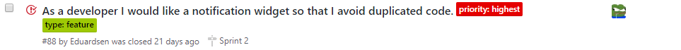
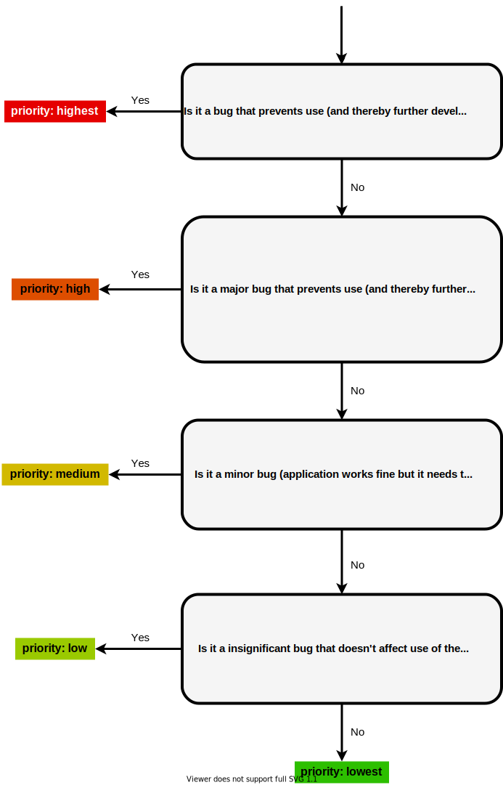

PO advice for next year's PO group¶
This document serves as a list of advice for the next PO group based on the experience we gathered throughout the semester. The PO group's main responsibility is to communicate with the customers of the GIRAF project and document this interaction. It is important that the customers' reactions, opinions and wishes for the program are written down, as these are the foundation for all the decisions that you, as the PO group, will take. In the following sections we provide an in-depth description of how we advice customer contact to be handled, and how the information gathered should be used.
Customer contact¶
In the start of the semester Ulrik will most likely schedule some meetings with the customers which everyone on the GIRAF project should attend. These serve to get the developers up to speed with what exactly the GIRAF project is and how the program is supposed to help people diagnosed with autism. Before these meetings it is a good idea to contact the customers to try and arrange a time for a meeting just for you, the PO group, where you can ask more specific questions regarding functionality and design of the program. The other groups should not be present for these meetings as it is your responsibility to relay this information to the other groups. We arranged a meeting with Emil from Egebakken right after his initial presentation. A transcription of this interview can be seen in the PO report of 2019. It is a good idea to get their phone numbers if possible, as it has been evident from our experience that communication through mail is often lacking. After this meeting you should have a good idea of what the customers want. You can then start setting goals for what should be completed in the upcoming sprint, as well as for the whole semester.
As soon as you have the start and end dates for you sprints solidified, you should contact as many customers as you can with dates for usability testing. We did this by sending a mail to every customer involved in the project. Remember to schedule usability testing after your releases so that you have a working program for the customers to test and evaluate. It is important that you ask the customers to confirm that they will participate in these tests. If they do not respond you should try and contact them to see if they simply forgot to reply. We did this by calling them on their phones or by calling their workplaces.
It is very important to take notes and document all meetings with customers. You will receive a lot of questions from the different developer groups about how functionality should be made and how it should look. Therefore, it is always better to have written down exactly what the customers want so that you do not have to guess and then refactor later if you guessed wrong. For example, an issue we faced was that we thought it would be sufficient for a guardian to copy activities one day at a time, but when we showed prototypes to the guardians they were very adamant on having the functionality be able to copy to multiple days at once. Another reason to document as much as possible, is that the users' feedback is the basis of all the user stories you are going to create.
Creating user stories¶
As the PO group it is your responsibility to create user stories. User stories are created based on requests from the users. We structured user stories in the following way:
- As a ... I would like ..., so that ...
When creating a user story you should consider the amount of work that is needed for it to be completed, and whether or not it should be split up into multiple smaller user stories. We created user stories in the appropriate repositories on our GitHub page under the issue tab. This made it easy to organize as user stories are uniquely numbered and can be put into milestones. When creating a pull request it is easy to tag the user story so that it will be automatically closed when the pull request has been merged by adding "Fixes #xx" to the comment, where xx is the ID of the issue in the repository. It also allowed us to assign them with tags such as "feature", and give them different priorities ranging from lowest to highest. A user story should, if needed, contain a prototype that ideally has been approved by a customer and a further description of the problem. We also had great success having one of the more experienced Flutter developers write a short technical comment explaining how they would structure the solution for the user story. This gave the developers who were not as experienced with Flutter a better starting point.
Below is an image of a user story.

As you can see on the figure, the user story has the number 88 and was created by the user Eduardsen. It has the tags "priority: highest" and "type: feature" and is under the milestone called sprint 2. In the right hand side you can see the profile picture of the developer currently assigned to implementing this user story. Another approach to creating user stories is when developer groups create feature requests. In most cases these need to be rewritten into user stories if the problem they are describing has not been formulated correctly or adequately. When creating user stories, take special care to ensure that your user stories are not written ambiguously and, if so, that you have the precise functionality that the users wanted explained within them.
Prioritizing user stories and issues¶
The figure below shows a guide for how to prioritize user stories:

The figure is available in .svg format here and can be edited in tools like draw.io if updates are needed.
{kind=link}
Prototypes¶
One of the important tasks of the PO group is to create and maintain prototypes. Prototypes should conform to the design guide which can be found on the Github Wiki-page. PO groups from previous years had been using PowerPoint to create prototypes, but we found this process to be slow and require a lot of repetitive work. Instead, we opted to use Adobe XD which reduced repetitive work and let us import the exact icons we used throughout the design guide, making the prototypes much more consistent. Doing meetings with the customers you should show them the prototypes you have made since the last time you spoke. It is a very good idea to get customer feedback so that you know you are headed in the right direction in relation to their expectations. It is also helpful if developers have a creative way to interpret a user story, as it allows you to show them how it should be with certainty. The prototypes can be found in both pdf and Adobe XD format here. Remember to update the files whenever you change the prototypes, so that the development team are up to date.
Distribution of user stories¶
In the beginning of a new sprint you should present the goals of the sprint to all the other groups. Here you should also present the user stories you believe correspond to these goals. Afterwards, groups are free to take one or two user stories that they can start working on from the ones you presented. These are the user stories will help you reach the functionality defined in the sprint goal, and should be prioritized highly. If a development group finishes their user stories before the sprint is over, they should be able to contact the PO group by writing or visiting the PO group to ask for permission to start a new user story. This should be done so the PO group can constantly keep track of the user stories currently being implemented. We decided to continually update a board in our group room with the status of all development groups and their user stories.
For the final sprint we chose to decide how to distribute user stories. We did this because we had a lot of documentation tasks that needed to be done and decided to distribute these as well to increase the likelihood of them being finished for next years groups. Consider doing the same for final/short sprints to maximize value for the customer. As you know which groups implemented which stories, and how productive the different groups are, you can use this to your advantage in distributing tasks.
Communication with other groups¶
During a sprint it is crucial to keep track of the status of other groups. Certain user stories can be blocked by other user stories and therefore you should regularly walk to the other group rooms and ask how their work is proceeding.
Being the PO group you should have a good overview of the developer groups' skills. If a certain group is stuck with a user story you should ask other groups to help them complete it. This is a great way to share knowledge and speed up development in some cases.
Knowing what people are working on also gives you the advantage of knowing what files they most likely are making changes in. This information can help you decide which user stories developer groups should take so that you reduce the amount of merge conflicts.
Cooperation with process group¶
A lot of the choices in regards to the process affects the work of the PO group. Because of this it is essential that you communicate with them and ensure that you are in agreement about what is being planned.
Approval of designs¶
We recommend enforcing that the PO group should be assigned to all pull requests that deal with the user interface of the application, as they are the group with the best understanding of how the customers interact with the system. This means that the design should be consistent with the prototypes that have been approved by the customer, and be very intuitive for them to use. It is a commonly known fact that software engineers are not designers and do not always think of user friendliness, so remember to keep them in check so the customers can actually figure out how to use the system. Some things we have noticed that you should pay special attention towards in design related PRs are:
- Good error messages should be shown to the user
- Icons are only used for one thing
- The design should be consistent with the design guide
Release preparation¶
Be prepared that at the end of every sprint you will not have much time to finish your assigned user stories, because the last days of every sprint will be spent on preparing for the release. At the first release preparation we tried to get as many user stories included in the release as possible. This meant that we were waiting for some groups to finish their user stories. We realized that this was not feasible and that we had to make a concrete deadline. This deadline had to be kept. Even though one of the user stories just needed 10 minutes extra before it would be completed it would have to wait until next release to be included. It was not feasible for us to keep delaying the release.
When the deadline was over, the release branch was created. Then we would cooperate with the process group to assign groups to review the different user stories that had been implemented throughout the sprint and try to find bugs. When a development group found a bug, they would create a release fix issue and the group that originally implemented the user story that was being investigated would be assigned to fixing the issue. At the first release we assigned every group to some issues and let them review them by themselves. This worked decently, but was a bit hard to coordinate because all the communication was done through Slack. At the second release we chose, in collaboration with the process group, to host a hackathon for release fixing where all the groups sat together. This made it much easier to communicate between all the groups and we felt that the process was much smoother because of this.
It is a good idea to document the releases as they are happening. This makes it much easier for you as the PO group to write about them in the report as well as in the wiki. Keep track of which issues were included in the release and which groups worked on these issues.
Usability testing¶
At the end of each sprint, a usability test should be conducted to get feedback on the features that have been developed in the sprint, and on potential new prototypes. We recommend that you arrange the usability tests shortly after the sprint has ended, so that you have time to translate the results into user stories. The customers usually prefer that the usability tests are held on weekdays at around 8am, so that they can do it before going to work. Remember to book a room for the usability test, and have someone from the group bring coffee and mugs to make it cozier for the customers - that makes them want to come back.
For the usability tests, you should have a series of assignments prepared for the users, based on the latest release. Remember to use their time well, and pose follow-up questions to the assignments and things you are uncertain of to clarify potential problems. If it goes smoothly, you can show them additional features on the develop branch, even though they may be buggy. Finally, after having conducted the usability test, you can show them new prototypes to get feedback on them.
Keeping GitHub issues updated¶
GitHub is the primary place for keeping track of the system, all features are listed as issues that are spread across the repositories of GIRAF. Thus, it is very important that you keep the information on GitHub up to date. This includes regularly going through the issues and checking if the issues are still relevant, and updating the priorities of the issues. At the end of every sprint, it is important that you go through issues to re-order the priorities of user stories, as each sprint will most likely deplete the repositories of stories that are marked as highest and high priority. Likewise, it is important to keep an eye on the bug reports and feature requests that are reported by other groups and translating these into user stories.
Sprint planning¶
The PO group is responsible for planning what should be done in each sprint. At the beginning of each sprint, the PO group will do a short presentation with the goals of the upcoming sprint and present which user stories they have picked out as a focus for the sprint. We came to the conclusion that it is better to include fewer, but more essential user stories to the sprint and let groups come talk to us when they are done with that user story, so that we are sure that they will be able to finish implementation within the time period of the sprint. In the first sprints, we let the groups choose an assignment from the presented user stories themselves, whereas in the last sprint we decided the user stories for each group, based on what they had previously worked on and what essential features we needed to include to have a minimum viable product available. Try to spread the user stories across the system as much as possible, so that multiple groups will not be working on the same screens if this can be avoided. This decreases the amount of merge conflicts and frustration for the developers.
Internal sharing of knowledge¶
An often overlooked problem for us was to ensure that all members of the PO group shared what information was given to groups when they came in for advice on a user story. If knowledge is not shared properly within the group, it is very easy to cause confusion for not only the PO group, but also the group asking the question, as it may not always be the same person in the PO group they talk to. It may be a good idea to keep a shared document where you can write down your decisions and which groups it was discussed with.